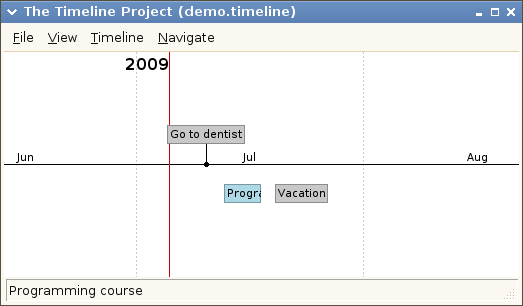
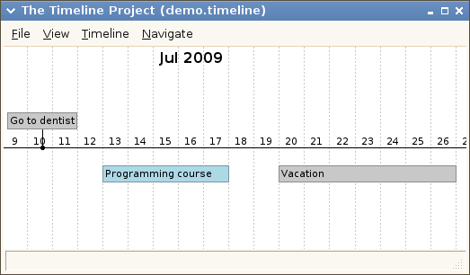
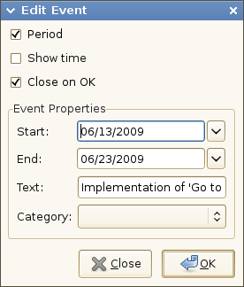
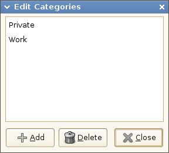
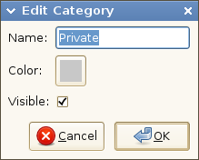
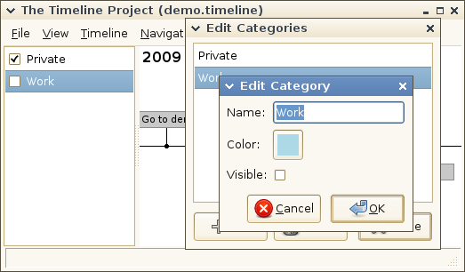
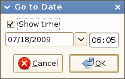

This page describes how to use Timeline versions 0.2.x. It assumes that you have already installed it.
The tutorial should contain enough information to get you started using Timeline. Later you can come back and read more details about particular features.
The idea is to display events on a timeline and to be able to quickly change what period in time is shown. An event can be at a specific point in time or span over a period.

Showing the two different types of events (cursor hoovering blue event).

Showing the same timeline as above but with a different zoom level.
To create a new timeline, select New from the File menu and enter a name of a file in the dialog box that opens. This is the name of the file in which information about your events will be stored. Next time you start Timeline you can choose to open the same file again.
To add a new event at a specific point in time, double click somewhere on the timeline. This will open a dialog box in which you enter a text for the event. Click the OK button to save the event. Now you will see an event above the horizontal line at the specific point in time that you double clicked on.
Timeline automatically saves all changes for you so you never need to manually save your timeline.
To add an event that spans over a period, hold the Ctrl-key down, click and drag the mouse to mark a period, and release the mouse button. Again the event dialog box will display and you enter a text for the event and click OK. Now you will also see an event displayed under the horizontal line spanning over the period that you selected.
Events at a specific point in time will always be displayed above the horizontal line. Events spanning over a period period will be displayed below the horizontal line most of the time. However, if the period is to small to fit within a few pixels on the screen, it will be displayed above the horizontal line (zooming in will make the event jump from above to below).
To edit an event, double click on it and the event dialog box will appear.
To select an event, just click on it. To select multiple events, hold down the Ctrl-key while selecting events. To delete the selected events, press the Del-key.
Try the mouse wheel and you will see the timeline scroll.
Try pressing the left mouse button and drag and you will see the timeline scroll.
Try the mouse wheel while holding the Ctrl-key down and you will see the timeline zoom.
The vertical red line indicates the current time.
Hoovering an event will display the full description in the status bar.
Editing event information is done in the dialog shown below.

It is used both for creating new events and for editing existing ones.
The Create Event dialog can be opened in the following ways:
The Edit Event dialog can be opened by double clicking on an event.
The following properties can be defined for an event:
The checkboxes at the top of the dialog work as following:
One or more events can be deleted at the same time. To delete events you first select them and thereafter press the Delete key.
Before the event is deleted the deletion must be acknowledged in the dialog box that appears when the Delete key has been pressed.
An event is selected by clicking within the rectangle representing the event. The event is deselected by clicking on it once again. To select more than one event, hold the Ctrl-key down while selecting events.
Categories are used to group events. An event can belong to one and only one category. All events that belong to the same category are displayed with the same background color. The color to be used is defined by the category. You can also choose to show or hide all events belonging to a category.
If no categories exist (as is the case when a new timeline is created) no categories will be associated with events. But as soon as there is a category an event must have one. (This might change in future versions so that you can create events without associating a category to it. Or maybe associate a default category.)
If you want to edit the categories you open the Edit Categories dialog. This is done by selecting the menu Timeline -> Edit Categories. The dialog looks like this:

You create a new category by clicking the Add button and thereafter filling in the attributes of the category in the dialog that appears. The visible checkbox determines if the events belonging to that category should be visible or not. This flag can also be modified in the sidebar (View -> Sidebar).

The Edit Category dialog.

Showing the correspondence between the visible flag in the Edit Category
dialog and the sidebar.
You delete a category by selecting it in the listbox and clicking the Delete button. You thereafter have to acknowledge the delete in the dialog that appears. When you delete a category, all the events that belonged to this category are associated with the special category None.
To edit a category, just double click on it.
In addition to the basic navigation functions described in the tutorial there are also a set of navigation functions in the Navigate menu:
Go To Today scrolls the timeline until the current date is at the center of the screen.
Go To Date has the same functionality as Go To Today with the exception that the user selects the date in a dialog.

The Go to Date dialog.
The Show Time checkbox is used to enable or disable input of time. The time will default to 00:00 if not entered. The timeline will be centered at the date and time. When the dialog is opened it is the date and time at the center of the screen that is displayed.
Fit Year will expand or contract the timeline so that it shows one whole year. The year shown is the year that is in the center of the screen.
Fit Month and Fit Day has the same functionality as the Fit Year except that the timeline will display one single month and one single day.